Theory
Theory
▶
Малювання з Turtle: лінії, кольори і цикли
Сьогодні ми навчимося малювати графіку за допомогою коду! Бібліотека turtle дозволяє керувати віртуальною "черепашкою", яка рухається по екрану і залишає за собою лінію — наче малює фломастером.
1. Знайомство з turtle
Щоб почати малювати, потрібно "покликати" бібліотеку turtle і створити черепашку:
import turtle
bob = turtle.Turtle()
turtle.done()Що тут відбувається:
- import turtle — підключає бібліотеку, як ми раніше підключали math.
- bob = turtle.Turtle() — створює черепашку з ім'ям bob. Можна назвати її як завгодно: turtle1, t — це звичайна змінна.
- turtle.done() — тримає вікно з малюнком відкритим. Без цього рядка вікно одразу закриється після виконання коду.
Коли запустиш цей код, з'явиться вікно з маленькою чорною трикутною стрілкою — це і є bob, готовий до руху.
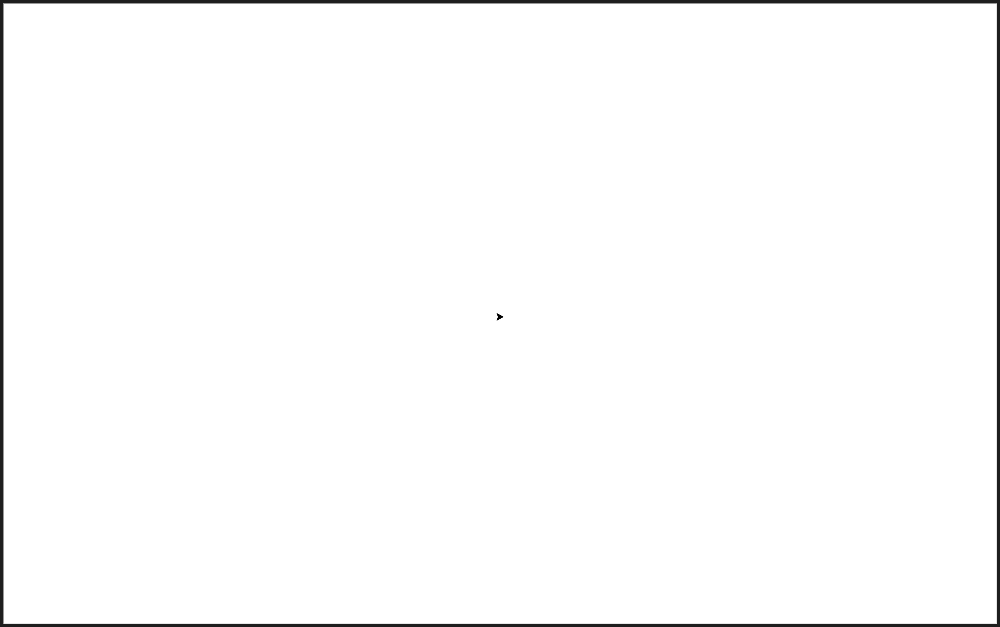
2. Рух і поворот
Черепашкою керують прості команди:
bob.forward(100) # рух вперед на 100 пікселів
bob.backward(50) # рух назад на 50 пікселів
bob.right(90) # поворот направо на 90°
bob.left(45) # поворот наліво на 45°Важливо знати: коли програма щойно почалась, черепашка дивиться вправо (умовно — на схід). right() повертає її за годинниковою стрілкою, left() — проти.
Наприклад, цей код намалює одну сторону квадрата, потім повернеться на 90° і намалює другу сторону:
bob.forward(100)
bob.right(90)
bob.forward(100)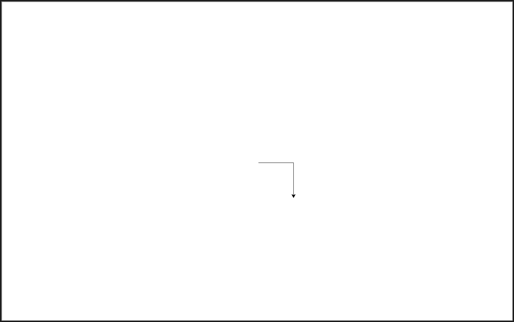
3. Колір і товщина лінії
Можна змінювати, яким кольором і наскільки товстою лінією малює черепашка:
bob.pencolor("red") # колір лінії — червоний
bob.pensize(5) # товщина лінії — 5 пікселівКольори можна писати англійською назвою ("red", "blue", "green") або спеціальним кодом (але про це поговоримо пізніше). Колір та товщину обираємо до того, як проводити лінію. І можна задати різні стилі для різних ліній:
bob.pencolor("cyan")
bob.pensize(5)
bob.forward(100)
bob.right(90)
bob.pencolor("gold")
bob.pensize(3)
bob.forward(100)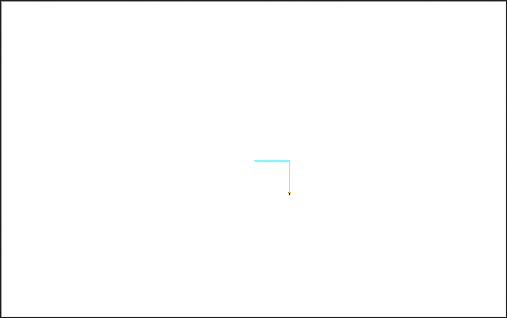
4. Рух без малювання лінії
Іноді треба перемістити черепашку в інше місце екрана, не залишаючи за нею слід . Для цього є команди "піднімання" і "опускання" ручки:
bob.penup() # піднімаємо ручку — лінія не малюється
bob.forward(50) # рухаємось, але без лінії
bob.pendown() # опускаємо ручку — знову малюємоНаприклад:
bob.pencolor("coral")
bob.pensize(4)
bob.forward(100)
bob.penup()
bob.forward(50)
bob.pendown()
bob.forward(100)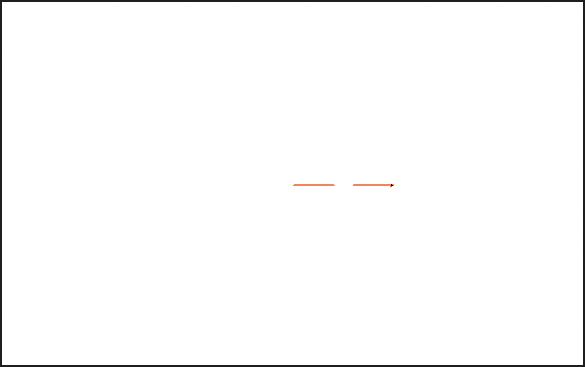
4.1. Переміщення в конкретну точку — goto
forward/backward рухають черепашку відносно того напрямку, куди вона зараз дивиться. Але часто зручніше сказати: "перейди ось у цю конкретну точку екрана" — незалежно від того, куди черепашка дивилась раніше. Для цього є команда goto:
bob.penup()
bob.goto(100, 50)
bob.pendown()Тут 100 і 50 — це координати x і y, точно як на координатній площині, яку ти знаєш з математики:
- Центр екрана — це точка (0, 0)
- x — рух вправо (додатне) чи вліво (від'ємне)
- y — рух вгору (додатне) чи вниз (від'ємне) — зверни увагу: вгору, а не вниз, як буває в деяких інших бібліотеках!
Наприклад, bob.goto(-100, -80) перемістить черепашку вліво і вниз від центру.
Важливо: сама команда goto малює лінію, якщо ручка опущена (pendown) — так само, як і forward. Тому, якщо хочеш перейти в нову точку без лінії, не забудь penup() перед goto() і pendown() після — так само, як ти вже робила з forward.
5. Заливка фігури кольором
Щоб зробити фігуру не просто з кольоровим контуром, а повністю зафарбованою всередині, використовують begin_fill() і end_fill():
bob.fillcolor("yellow") # колір, яким зафарбуємо
bob.begin_fill() # починаємо стежити за контуром
bob.forward(100)
bob.right(90)
bob.forward(100)
bob.right(90)
bob.forward(100)
bob.right(90)
bob.forward(100)
bob.right(90)
bob.end_fill() # зафарбовуємо все, що намалювали між begin/end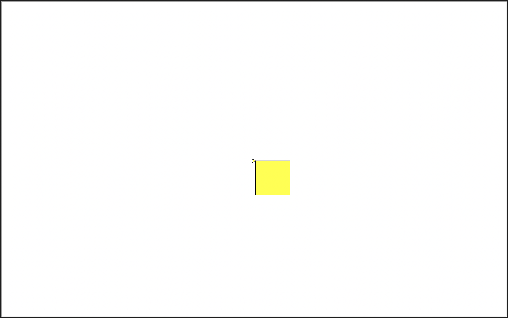
Все, що намальовано між begin_fill() і end_fill(), заповнюється кольором, заданим у fillcolor().
6. Цикл for — щоб не повторювати код
Помітила, що в прикладі з квадратом ми писали forward і right чотири рази підряд? Це можна зробити набагато компактніше за допомогою циклу:
for i in range(4):
bob.forward(100)
bob.right(90)Це означає: "повтори ці два рядки 4 рази". Результат буде точно такий самий, як і 8 рядків коду раніше — квадрат!
range(4) означає "4 рази". Якщо потрібно повторити 10 разів — пишемо range(10).
Тести
Перевір свої знання
1. Що трапиться, якщо прибрати рядок turtle.done() з коду?
2. Яку фігуру намалює код, наведений нижче?
bob.forward(100)
bob.right(90)
bob.forward(100)
bob.right(90)
bob.forward(100)
bob.right(90)
bob.forward(100)
bob.right(90)3. Якщо черепашка вже намалювала одну лінію чорним кольором, а потім ми викликали bob.pencolor("red") — що станеться з тією лінією, яку вже намальовано?
4. Чому цей код намалює зайву лінію, яку ми не хотіли бачити?
bob.forward(100)
bob.forward(50)
bob.pendown()
bob.forward(100)5. Що, думаєш, станеться, якщо викликати begin_fill(), намалювати квадрат, але забути написати end_fill()?
6. Якщо ми хочемо намалювати циклом правильний шестикутник (фігуру з 6 рівними сторонами і рівними кутами), скільки разів повинен повторитись цикл? І на який кут, як думаєш, має повертатись черепашка після кожної сторони, щоб фігура замкнулась рівно після шостого повороту?
 Practice
Practice
▶
Завдання
Завдання 1
- Намалюй квадрат зі стороною 100 пікселів.
- Поруч (не на тому самому місці!) намалюй прямокутник 100×60.
(Спробуй спочатку без циклу for — просто рядок за рядком.)
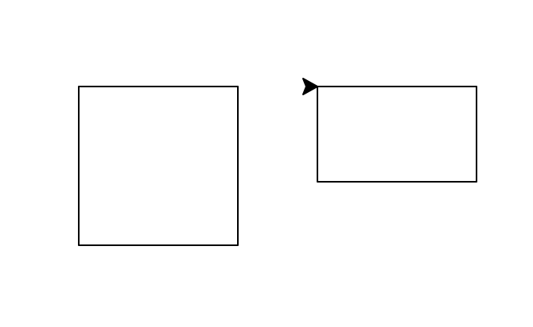
Завдання 2
- Намалюй квадрат зі стороною 150 та товщиною ліній 4.
- Зроби всі лінії різного кольору.
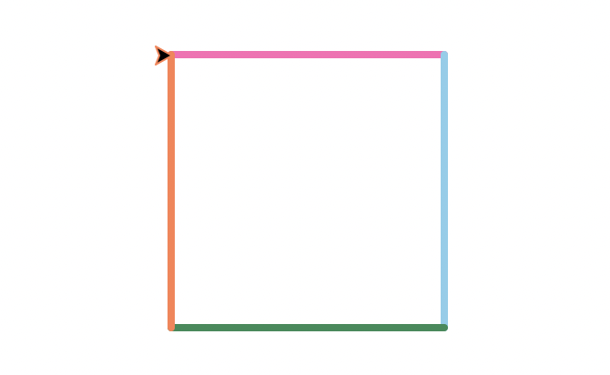
Завдання 3
Намалюй два трикутники:
- Прямокутний (гіпотенуза: math.sqrt(2) * довжина катета).
- Рівносторонній.
Пам'ятай: кут повороту черепашки — це не той кут, що в трикутнику, а зовнішній кут (180° мінус внутрішній кут).
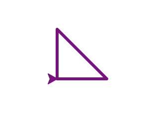
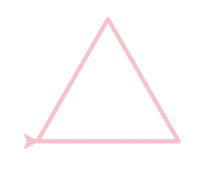
Завдання 4
Намалюй два прямокутники з заливкою кольором: синій зверху, жовтий знизу — так, щоб разом вони утворили прапор.
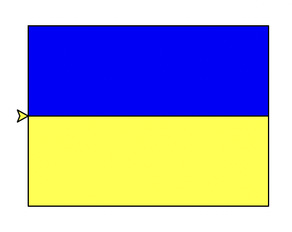
Завдання 5
Напиши програму, яка:
- Запитує у користувача (через input()) кількість сторін (n) многокутника і довжину сторони (length).
- Обчислює потрібний кут повороту черепашки (angle).
- Малює правильний многокутник циклом for.
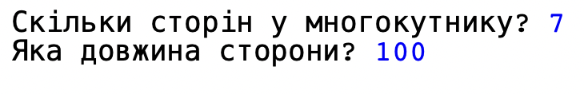
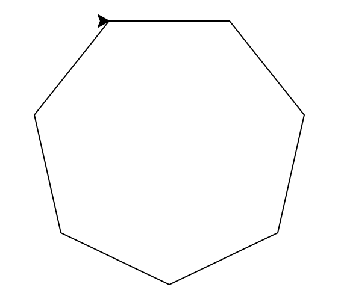
Завдання 6
Цей код малює пʼятикутну зірку:
for i in range(5):
bob.forward(200)
bob.right(144)- Поекспериментуй із цифрами в дужках, щоб вийшла зірка з більшою кількістю кутів.
- Зміни колір та товщину ліній і додай заливку.
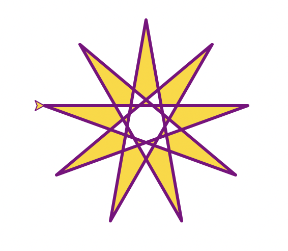
Завдання 7
Намалюй три маленькі квадратики (сторона 30) у трьох різних місцях екрана, переміщаючись між ними без зайвих ліній.
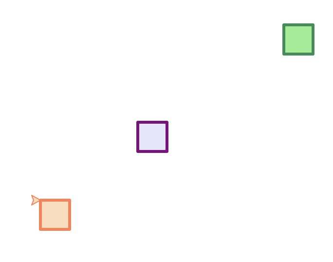